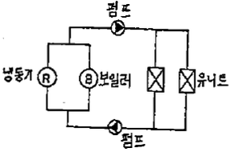
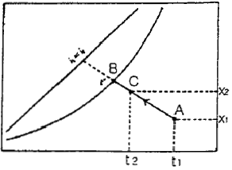
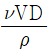
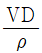
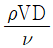
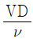
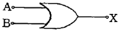
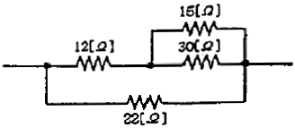
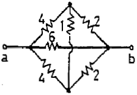
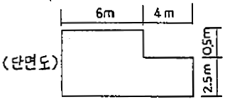

건축설비기사 (2006-05-14 기출문제)
1과목: 건축일반
1. 목조 벽체의 가새에 관한 기술 중 옳지 않은 것은?
- 가새의 경사는 45°에 가까울수록 유리하다.
- 가새의 단면은 큰 것이 좋지만 기둥에 휨 모멘트를 줄 수도 있으므로 주의해야 한다.
- 가새와 샛기둥의 접합부는 가새를 조금 따내어 맞추는 것이 좋다.
- 가새는 수평력에 대하여 견디게 하는 부재이다.
(정답률: 알수없음)

2. 목구조 접합에 관한 설명 중 가장 부적당한 것은?
- 응력이 작은 곳에서 이음과 맞춤을 한다.
- 이음과 맞춤은 공작이 간단한 것이 좋다.
- 이음과 맞춤을 정확히 가공하여 서로 밀착되도록 한다.
- 이음과 맞춤의 단면은 응력의 방향과 일치하도록 하여 응력을 균등하게 전달시킨다.
(정답률: 67%)
3. 알루미늄 창호에 대한 설명으로 틀린 것은?
- 감도가 약하므로 외부 커튼윌로 사용할 경우에는 멀리온 내부에 철판을 접합시켜 보강한다.
- 알칼리에 약하므로 모르타르와 직접 접촉을 피한다.
- 가공성이 우수하여 복잡한 형태의 단면을 형성할 수 있다.
- 가볍고 기밀성이 좋다.
(정답률: 알수없음)
4. 다음 중 결로발생의 원인과 가장 관계가 먼 것은?
- 실내와의 온도차
- 실내에 습기의 과다발생
- 건물지붕의 기울기
- 건물외피의 단열상태
(정답률: 알수없음)
5. 다음의 단층교사에 대한 설명 중 옳지 않은 것은?
- 학습활동을 실외에 연장할 수가 있다.
- 부지의 이용률이 높으며 치밀한 평면계획을 할 수가 있다.
- 채광 및 환기가 유리하다.
- 재해 시 피난 상 유리하다.
(정답률: 86%)
6. 상점의 판매형식 중 대면판매에 대한 설명으로 틀린 것은?
- 진열 면적이 크고 상품의 충동적 구매와 선택이 용이하다.
- 상품의 설명을 하기가 편하다.
- 판매원의 고정 위치를 접하기가 용이하다.
- 포장, 계산이 편리하다.
(정답률: 알수없음)
7. 다음 중 블록의 빈 속에 철근을 배근하고 콘크리트를 사출하여 보강한 가장 이상적인 블록구조는?
- 조적식 블록조
- 거푸집 블록조
- 블록 장막벽
- 보강콘크리트 블록조
(정답률: 100%)
8. 실내의 음향계획에 대한 설명 중 옳지 않은 것은?
- 음은 실내에 동일하게 들리도록 한다.
- 반사음이 어느 한 부분으로 집중되는 것은 좋지 않다.
- 청중이 많으면 잔향시간이 짧아진다.
- 흡음재를 사용하면 반향이 커진다.
(정답률: 73%)
9. 경사지를 적절하게 이용할 수 있으며, 각호마다 전용의 정원을 갖는 주택형식은?
- 테리스 하우스(terrace house)
- 타운 하우스(town house)
- 중정형 하우스(patio house)
- 로 하우스(row house)
(정답률: 알수없음)
10. 다음의 병원의 간호사 대기소에 대한 설명 중 가장 부적당한 것은?
- 1개소 간호사 대기소에서 관리하는 병상 수는 30~40개소 이하로 한다.
- 간호사의 보행거리는 24m 이내가 되도록 한다.
- 가급적 각 간호단위, 각 층 및 동별로 설치한다.
- 계단, 엘리베이터실과는 떨어진 곳에 설치한다.
(정답률: 59%)
11. 다음 중 철근콘크리트보에서 스터럽을 사용하는 가장 주된 이유는?
- 전단력에 의한 균열방지
- 보의 좌굴방지
- 주근의 철근량 감소
- 콘크리트 부착력 증대
(정답률: 알수없음)
12. 다음 중 철근 콘크리트 기둥에 띠철근이나 나선철근을 사용하는 목적과 가장 관계가 먼 것은?
- 기둥 주근의 좌굴에 대한 보강
- 수평력에 대한 전단 보강
- 주근 내부의 콘크리트 구속효과
- 기둥의 휨모멘트에 대한 보강
(정답률: 46%)
13. 초등학교의 계간으로 적당하지 않은 것은?
- 계단의 표면은 미끄럽지 않도록 마무리한다.
- 안전을 위하여 모든 계단에는 난간을 설치해야 한다.
- 계단높이 3m 이내마다 계단창을 설치한다.
- 단 높이는 16cm 이하여야 한다.
(정답률: 알수없음)
14. 다음 중 리조트 호텔(resort hotel)에 속하지 않는 것은?
- 클럽 하우스
- 터미널 호텔
- 온천호텔
- 산장호텔
(정답률: 알수없음)
15. 다음의 아파트의 평면 형식에 대한 설명 중 옳은 것은?
- 편복도형은 복도가 폐쇄형이므로 각호의 통풍 및 채광이 좋지 않다.
- 중복도형은 독립성은 좋으나 부지의 이용률이 낮다.
- 집중형은 통풍, 채광 조건이 좋아 기계적 환경조절이 필요하지 않다.
- 계간실형은 동선이 짧으므로 출입이 편하며 독립성이 좋다.
(정답률: 100%)
16. 다음의 사무소 건축물의 코어계획에 대한 설명 중 옳지 않은 것은?
- 코어 내의 공간과 임대 사무실 사이의 동선은 간단해야 한다.
- 코어 내의 각 공간은 각 층마다 공통의 위치에 있도록 한다.
- 엘리베이터는 가급적 중앙에 집중시키도록 한다.
- 엘리베이터 혹은 출입구문에 바싹 접근해 있도록 한다.
(정답률: 59%)
17. 다음 중 실내조명 설계순서에서 가장 우선적으로 고려해야 할 사항은?
- 조명방식의 선정
- 소요조도의 결정
- 조명기구의 배치결정
- 조명기구의 선정
(정답률: 알수없음)
18. 다음 중 열교(thermal bridge)현상에 관한 설명으로 가장 부적당한 것은?
- 벽이나 바닥, 지붕 등의 건축물 부위에 단열이 연속되지 않는 부분이 있을 때 생긴다.
- 열교현상을 줄이기 위해서는 콘크리트 라멘조의 경우 가능한 한 내단열로 시공한다.
- 열교현상이 발생하는 부위는 표면온도가 낮아져서 결로가 쉽게 발생한다.
- 열교현상이 발생하면 전체 단열성이 저하된다.
(정답률: 알수없음)
19. 사무소 건축에 있어서 개실 시스템에 대한 설명으로 옳은 것은?
- 독립성과 쾌적감의 이점이 있는데 반해 공사비가 비교적 고가이다.
- 소음 발생 때문에 프라이버시가 결여되기 쉽다.
- 방 길이에는 변화를 줄 수 없으나, 연속된 긴 복도 때문에 방 깊이에 변화를 줄 수 있다.
- 대표적인 개실 시스템으로 오피스 랜드스케이핑이 있다.
(정답률: 64%)
20. 다음의 동선계획에 대한 설면 중 옳지 않은 것은?
- 동선은 일상생활의 움직임을 표시한 궤적이다.
- 동선의 3요소는 길이, 빈도, 위치이다.
- 동선계획이란 동선을 효율적이고, 합리적으로 유도하기 위한 계획이다.
- 일반적으로 화장실, 계단, 현관과 같은 사용빈도가 높은 곳은 동선을 짧게 계획한다.
(정답률: 55%)
2과목: 위생설비
21. 급수설비를 설계하는데 있어서 다음의 항목 중 가장 먼저 결정해야 될 사항은?
- 수도 인입관의 설계
- 수수조의 크기
- 급수관의 관경 결정
- 급수량의 산정
(정답률: 85%)
22. 배수 및 통기배관에 대한 설명 중 옳지 않은 것은?
- 배수수평관에는 배수와 그것에 포함되어 있는 고형물을 신속하게 배출하기 위하여 구배를 두어야 한다.
- 간접배수계통 및 특수배수계통의 통기관은 다른 통기계통과 접속하여 공동으로 대기 중에 개구한다.
- 배수수직관의 관경은 최하부부터 최상부까지 동일하게 한다.
- 지분을 관통하는 통기관은 지붕으로부터 150mm 이상 입상하여 대기 중에 개구한다.
(정답률: 40%)
23. 급탕배관에 관한 설명 중 옳지 않은 것은?
- 건물의 벽 관통부분의 배관에는 슬리브를 끼운다.
- 급탕관의 최상부에는 공기배기 장치를 설치한다.
- 관의 신축에 대비 100m 이내마다 신축 이음 1개를 설치한다.
- 중앙식 급탕설비는 원칙적으로 강제순환방식으로 한다.
(정답률: 80%)
24. 다음 중 배수트랩이 구비해야 할 조건과 가장 관계가 먼 것은?
- 유효 봉수 깊이(50m[mm] 이상 100[mm] 이하)를 가질 것
- 가동부분이 있으며 가동부분에 봉수를 형성할 것
- 가능한 한 구조가 간단할 것
- 배수시에 자기세정이 가능할 것
(정답률: 84%)
25. 연면적 2000m2 사무실 건물의 1일 급수량은? (단, 1인 1일당 평균사용수량 : 100L/dayㆍ인, 유효면적당 인원 0.2인/m2, 유효면적비율 60%)
- 20,000 L/day
- 40,000 L/day
- 24,000 L/day
- 120,000 L/day
(정답률: 알수없음)
26. 어떤 소방대상물의 한 층에 옥내소화전을 5개 설치하려고 한다. 옥내소화전설비의 수원의 최소 유효 저수량은 몇 m3인가?
- 7m3
- 13m3
- 2m3
- 28m3
(정답률: 59%)
27. 통기관의 관경에 대한 기술 중 틀린 것은?
- 결합통기관의 관경은 통기수직관과 배수수직관 중 작은 쪽 관경 이상으로 한다.
- 루프통기관의 관경은 배수수평지관과 통기수직관 중 작은 쪽 관경의 1/2 이상으로 한다.
- 각개통기관의 관경은 그것이 접속되는 배수관 관경의 1/2 이상으로 한다.
- 신정통기관의 관경은 배수수직관 관경의 1/2 이상으로 한다.
(정답률: 55%)
28. 다음의 물의 경도에 대한 설명 중 옳지 않은 것은?
- 일반적으로 물이 접하고 있는 지층의 종류와 관계없이 지표수는 경수, 지하수는 연수로 간주된다.
- 경도가 큰 물을 경수, 경도가 낮은 물을 연수라고 한다.
- 물의 경도는 물 속에 녹아있는 칼슘, 마그네슘 등의 염류의 양을 탄산칼슘의 농도로 환산하여 나타낸다.
- 경도의 표시는 도(度) 또는 ppm이 사용된다.
(정답률: 알수없음)
29. LPG 및 LNG에 대한 설명으로 옳지 않은 것은?
- LNG는 천연적으로 산출하는 천연가스를 -162℃까지 냉각 액화한 것을 말한다.
- LPG는 주위에서 증발잠열을 빼앗아 가화한다.
- LPG는 일산화탄소를 함유하지 않기 때문에 생가스에 의한 중독의 위험성은 없으나 질식 또는 불완전 연소에 의한 일산화탄소 중독의 가능성은 있다.
- LNG의 비중은 공기의 비중보다 크므로 누설되었을 때 하부에 체류하기 쉽다.
(정답률: 알수없음)
30. 배수설비에서 트랩의 봉수가 파괴되는 원인이 아닌 것은?
- 수격작용
- 자기사이폰 작용
- 증발현상
- 모세관현상
(정답률: 알수없음)
31. 옥외소화전 설비에 관한 설명으로 틀린 것은?
- 2개의 옥외소화전을 동시에 사용할 경우 각 옥외소화전의 노즐 선단에서의 방수압력은 2.5kg/cm2 이상이 되도록 한다.
- 호스 접결구는 소방대상물의 각 부분으로부터 하나의 호수 접결구까지의 수평거리가 40m 이하가 되도록 설치하여야 한다.
- 옥외소화전설비에는 옥외소화전마다 그로부터 5m 이내의 장소에 소화전함을 설치하여야 한다.
- 옥외소화전설비의 수원은 그 저수량이 옥외수화전의 설치개수에 5m3를 곱한 양 이상이 되도록 한다.
(정답률: 47%)
32. 어떤 정화조에서 유입수의 BOD가 150(mg/L), 유출수의 BOD가 60mg/L)일 때 이 정화조의 BOD 제거율은?
- 60%
- 90%
- 75%
- 40%
(정답률: 70%)
33. 배관의 신축이음쇠에 대한 설명으로 옳은 것은?
- 스위블형 : 2개 이상의 엘보를 조합한 것으로 굴곡부의 압력강하가 크고 신축량이 큰 배관에 주로 사용된다.
- 슬리브형 : 관의 신축을 슬리브의 변형으로 흡수하도록 한 것으로서 곡선배관부위에도 사용이 가능하다.
- 벨로즈형 : 신축량이 큰 장점이 있으나 설치장소를 많이 차지하며 누설우려가 있다.
- 루프형 : 관의 구부림과 관자체의 가요성을 이용해서 배관의 신축을 흡수한다.
(정답률: 47%)
34. 펌프의 양정에 대한 설명 중 옳지 않은 것은?
- 물을 높은 곳으로 보내는 경우, 흡수면으로부터 토출수면까지의 수직거리를 실양정이라고 한다.
- 흡수면으로부터 토출수면까지 거리만큼 물이 올라가는데 필요한 에너지를 전양정이라고 한다.
- 흡수면에서 펌프축 중심까지의 수직거리를 토출 실양정이라고 한다.
- 물이 흐를 때는 유속에 상당하는 에너지가 필요하며, 이 에너지를 속도수두라 한다.
(정답률: 알수없음)
35. 대ㆍ소변기 관련사랑으로 틀린 것은?
- 전자 감응식 소변기는 전원 공급방식과 건전지 사용방식이 있다.
- 아파트에서 로우탱크식 대변기를 사용하는 주된 이유는 수압 때문이다.
- 대변기는 내부 유수 면이 넓을수록 냄새방지에 효과적이다.
- 절수형 대변기는 절수형 플러시 밸브 등 전용의 기구가 필요하며, 설치 가격은 약간 비싸지만 절수효과에 따른 경비절약이 가능하다.
(정답률: 알수없음)
36. 건물의 내부에 사용하는 급수배관 재료에 대한 설명으로 옳지 않은 것은?
- 아면도 강관은 기계적 강도와 시공성은 양호하지만 부식으로 인한 수질오염의 문제가 있다.
- 수도용 동관은 내식성이 뛰어나고 마찰저항이 작다.
- 스테인레스 강관은 적수나 청수의 염려가 없지만 동결이나 충격에 약하다.
- 경질염화비닐관은 배관의지지 및 고정이 어렵고 내화성이 없다.
(정답률: 50%)
37. 다음의 펌프에 관한 설명 중 옳은 것은?
- 펌프 1대에 임펠러 1개를 갖고 있는 경우 단단(單段)펌프라 하며 양정이 그다지 높지 않은 경우에 사용된다.
- 볼류트 펌프는 임펠러 주위에 안내날개를 갖고 있기 때문에 고양정을 얻을 수 있다.
- 펌프의 축 동력은 회전수의 제곱에 비례한다.
- 캐비테이션을 방지하기 위해서는 흡수관을 가능한 한 깊고 얇게 함과 동시에 관내에 공기가 체류할 수 있도록 배관한다.
(정답률: 67%)
38. 물의 비중량은 1000[kg/m3], 양수량은 100[L/min], 전양정은 20[m], 펌프효율은 60[%]일 때 양수펌프의 축 동력[kW]은?
- 0.25
- 0.54
- 0.75
- 1.00
(정답률: 59%)
39. 중앙식 급탕방식에 대한 설명으로 옳지 않은 것은?
- 배관 및 기기로부터의 열손실이 많다.
- 급탕 개소마다 가열기의 설치 스페이스가 필요하다.
- 시공 후 기구 증설에 따른 배관 변경 공사를 하기 어렵다.
- 기계실 등에 다른 설비 기계와 함께 가열장치 등이 설치되기 때문에 관리가 용이하다.
(정답률: 47%)
40. 급탕설비의 열원기기를 설계할 경우 주의사항을 설명한 것 중 틀린 것은?
- 가열기의 능력과 저탕량을 결정하기 위하여, 시간 최대 급탕량과 피크로드의 계속시간을 알아야 한다.
- 탕의 사용상태가 간헐적이며 일시적으로 사용량이 많은 건물에서는 저탕용량을 그게 하고 가열능력도 크게 한다.
- 장시간에 걸쳐서 탕의 사용량이 평균적인 건물에서는 저탕용량을 작게 하고 가열능력을 크게 취한다.
- 공장과 같이 증기 등의 열원을 풍부하게 얻을 수 있는 경우에는 가열기의 능력을 크게 한다.
(정답률: 알수없음)
3과목: 공기조화설비
41. 유인유닛과 팬코일유닛 비교시 틀린 것은?
- 팬코일유닛은 유인유닛에 비해 소음이 적다.
- 유인유닛은 전용계통 덕트가 필요하다.
- 팬코일유닛은 내부에 팬이 있어 보수가 필요하다.
- 유인유닛은 냉방용으로만 사용된다.
(정답률: 46%)
42. 보일러에 관한 다음의 A군과 B군의 조합 중에서 잘못된 것은?
- A군 : 증발계수, B군 : 실제증발량÷상당증발량
- A군 : 급수예열장치, B군 : 인젝터
- A군 : 굴뚝의 단면적, B군 : 켄트(KENT)의 식
- A군 : 대용량연소장치, B군 : 회전식 버너
(정답률: 25%)
43. 다음 건물의 공기조화방식의 연결로 가장 적당한 것은?
- 백화점의 매장-가변풍량 단일덕트방식
- 호텔의 객실-단일덕트방식
- 극장-팬코일유니트방식
- 레스토랑-이중덕트방식
(정답률: 알수없음)
44. 다음 중 환기효과가 가장 큰 환기법은?
- 압입ㆍ흡출병용방식
- 압입방식
- 흡출방식
- 자연환기방식
(정답률: 알수없음)
45. 그림과 같은 형태의 펌프의 배치 방식은?

- 주 펌프(main pumo)방식
- 존 펌프(zone pumo)방식
- 부스터 펌프(booster pumo)방식
- 바이패스(by pumo)방식
(정답률: 50%)
46. 다음은 동관의 사용용도를 나타낸 것이다. 가장 부적합한 것은?
- 냉온수관
- 냉각수관
- 급수관
- 증기관
(정답률: 알수없음)
47. 다음 중 증기난방방식을 환수방식에 의해 분류한 것은?
- 증력식, 기계식, 진공식
- 상향, 하향 급기식
- 단관식, 복관식
- 고압식, 저압식
(정답률: 알수없음)
48. 다음의 습공기 선도상에서 공기 상태점 A가 C로 변할 때 이러한 공기의 상태변화를 무엇이라 하는가?

- 잠열변화
- 가열가습
- 냉각감습
- 증발냉각
(정답률: 알수없음)
49. 환기설비에서 변소나 주방 또는 냄새가 많이 나는 실의 환기는 어떤 방법으로 하는 것이 좋은가?
- 압입ㆍ흡출병용방식
- 압입식
- 흡출식
- 자연환기
(정답률: 알수없음)
50. 침입외기(극간풍)에 의한 잠열부하의 공식은? (단, Ql : 침입외기량(m3/h), to, tr : 외기온도, 실내온도, xo, xr : 외기의 절대습도, 실내의 절대습도)
- qL=0.28Ql (to-tr)
- qL=0.24Ql (to-tr)
- qL=0.75Ql (xo-xr)
- qL=0.717Ql (xo-xr)
(정답률: 10%)
51. 다음의 열매체 중 상당 발열량[kcal/m2ㆍh]이 가장 큰 것은?
- 저압증기
- 보통온수
- 고압증기
- 고온수
(정답률: 알수없음)
52. 기기나 배관 내의 유량조절이 빈번하지 않고 일정량으로 유지시키기 위하여 사용되는 밸브는 어느 것인가?
- 체크밸브
- 볼밸브
- 플럭콕
- 유니온
(정답률: 알수없음)
53. 소음이 적기 때문에 취출풍속을 5m/s 이상으로 사용하며, 소음규제가 심한 방송국 스튜디오나 음악감상실 등에 사용되는 취출구는?
- 노즐형
- 라인형
- 슬롯형
- 펑커루버
(정답률: 알수없음)
54. 덕트내의 풍속 측정시 가장 편리하게 이용할 수 있는 풍속계는?
- 풍차풍속계
- 열선식풍속계
- 피토우관
- 카터온도계에 의한 측정
(정답률: 43%)
55. 공조설비의 취출구 증류 중에서 천장에 설치하지 않는 것은?
- 팬형
- 아네모스탯형
- 다공판형
- 머쉬룸형
(정답률: 42%)
56. 다음 중 호텔의 객실에 가장 적합한 공조방식은?
- 패키지 방식
- 인덕션 방식
- 유니트 히터방식
- 각층 유니트방식
(정답률: 알수없음)
57. 20×30m인 사무소 공간의 환기에 의한 외기부하률 계산하면? (단, 1인당 면적 5m2/인, 1인당 환기량 = 25m3/hㆍ인, 실내 t=26℃, xi=0.01⑤ kg/kg‘, 외기 to=32℃, Xo=0.0212 kg/kg')
- 13,200 Kcal/h
- 22,300 Kcal/h
- 28,300 Kcal/h
- 31,300 Kcal/h
(정답률: 알수없음)
58. 습공기의 상태치 중 2가지 요소를 알면 습공기선도를 이용하여 나머지 상태치를 구할 수 있는데 다음 중 그 조합으로 틀린 것은?
- 건구온도, 습구온도
- 절대습도, 비용적
- 건구온도, 수증기분압
- 현열비, 건구온도
(정답률: 알수없음)
59. 관내유속율 V(m/s), 관의 내경율 D(m), 유체의 밀도를 ρ(kg/m3), 동정성계수를 ν(m2/S)라고 할 때 레[이놀드수 Re는?




(정답률: 31%)
60. 습공기 선도에 관한 다음 기술 중 가장 적당한 것은?
- 0℃ 건조공기의 엔탈피를 0 kcal/jg‘ 로 한다.
- 열수분비가 0 이라면 그때 공기의 상태변화에는 절대 습도 변화가 없었다는 의미이다.
- 습공기 선도상에 나타나 있는 건구온도 및 습구온도는 비통풍식 건습구 온도계로 측정한 건습구온도와 같다.
- 현열비가 1 이라면 잠열부하만 있다는 것을 의미한다.
(정답률: 알수없음)
4과목: 소방 및 전기설비
61. 자성체에 도체를 감고 전류를 흘렀을 때 흐르는 전류에 의한 자장의 자기전력선의 방향을 알 수 있는 법칙은?
- 플레밍의 왼손 법칙
- 플레밍의 오른손 법칙
- 앙페르의 오른 나사 법칙
- 렌쯔의 법칙
(정답률: 50%)
62. 옥내 조명에서 스위치의 일반적인 설치높이는 바닥에서 몇 [m]정도 인가?
- 0.5
- 1.2
- 1.6
- 1.8
(정답률: 60%)
63. 변압기는 다음 중 어떤 현상을 응용한 것인가?
- 장전유도
- 전자유도
- 전계유도
- 전압유도
(정답률: 50%)
64. 다음의 단상유도 전동기 중 역률이 가장 좋은 것은?
- 반발 기동형
- 콘덴서 기동형
- 분상 기동형
- 셰이딩 코일형
(정답률: 70%)
65. 1차 전압 3300[V], 2차 전압 100[V]의 변압기에서 2차 전압을 80[V]로 만들기 위하여는 1차에 몇 [V]를 가하면 되는가? (단, 권선의 임피던스는 무시한다.)
- 2640
- 2910
- 2945
- 2970
(정답률: 알수없음)
66. 다음 중 전기와 관련된 용어와 그 단위의 연결이 옳지 않은 것은?
- 자속 : [Wb]
- 기자력 : [V]
- 정전용량 : [F]
- 리액턴스 : [Ω]
(정답률: 50%)
67. 변압기의 전부하 시의 2차전압이 100[V], 무부하 시의 2차 전압이 102[V]이라면 전압변동률은 몇 퍼센트[%]인가?
- 1.96 [%]
- 2 [%]
- 2.04 [%]
- 4 [%]
(정답률: 알수없음)
68. 절연파괴 등의 전기사고가 발생하여 인체에 가해져도 위험이 없는 전압은?
- 규정 전압
- 선로 전압
- 안전 전압
- 감전 전압
(정답률: 82%)
69. 10[A]의 전류를 흘렸을 때의 전력이 100[W]인 저항에 20[A]의 전류를 흘렀을 때 전력은 몇 [W]인가?
- 100 [W]
- 200 [W]
- 300 [W]
- 400 [W]
(정답률: 알수없음)
70. 단상 변압기 3대로 3살 결선하는 방식이 아닌 것은?
- V-V결선
- ⧍-⧍결선
- ⧍-Y결선
- Y-⧍결선
(정답률: 알수없음)
71. HiV전선이라고도 불리우는 것으로 내열성이 요구되는 옥내 배선에 사용되는 절연전선은?
- 600V 비닐절연전선
- 600V 2종 비닐절연전선
- 600V 고무절연전선
- 인입용 비닐절연전선
(정답률: 알수없음)
72. 다음 중 3상 농형 유도전동기의 기동법으로 사용되지 않는 것은?
- Y-⧍ 기동법
- 2차 저항법
- 직입 기동법
- 리액터 기동법
(정답률: 40%)
73. 저항 20[Ω]의 전열기에 220[V]의 전압을 60[sec] 동안 가했을 때 발생하는 열량 H[kcal]는 얼마인가?
- 145.2[kcal]
- 264.0[kcal]
- 34.848[kcal]
- 63.36[kcal]
(정답률: 34%)
74. 공조설비의 자동제어에서 압력검출소자로 사용되지 않는 것은?
- 다이어프햄
- 모발
- 브로돈관
- 벨로즈
(정답률: 30%)
75. 다음 그림의 게이트 기호는 무엇을 나타내는가?

- AND
- OR
- NOT
- NOR
(정답률: 알수없음)
76. 전기식 자동제어 방식에 대한 설명으로 틀린 것은?
- 검출부와 조절부가 일체형으로 되어 있다.
- 정밀한 제어 및 비례 적분제어에 적합하다.
- 조작 동력원으로 사용전원을 직접 사용한다.
- 신호처리가 쉽고 원격조작도 용이하다.
(정답률: 알수없음)
77. 논리식 Aㆍ(A+B)를 간단히 하면 무엇인가?
- A+B
- AㆍB
- B
- A
(정답률: 알수없음)
78. 자동화재탐지설비의 감지기 중 차등식감지기와 정온식감지기의 기능을 합친 감지기는?
- 증계기
- 연기 감지기
- 보상식 감지기
- 광전식 감지기
(정답률: 알수없음)
79. 다음 회로의 합성저항은?

- 6[Ω]
- 9[Ω]
- 11[Ω]
- 16[Ω]
(정답률: 50%)
80. 그림과 같이 접속한 회로에서 a, b 단자 간에 합성저항은 몇 [Ω]인가?

- 1
- 1.5
- 2
- 3
(정답률: 47%)
5과목: 건축설비관계법규
81. 에너지정책 및 계획 등에 관한 내용 중 틀린 것은?
- 국가에너지기본계획은 5년마다 수립한다.
- 지역에너지계획은 5년마다 수립한다.
- 국가에너지기본계획은 10년 이상을 계획이간으로 한다.
- 지역에너지계획은 10년 이상을 계획이간으로 한다.
(정답률: 알수없음)
82. 공사감리자가 필요하다고 인정하는 경우에 공사시공자에게 상세시공도면의 작성을 요청할 수 있는 공사의 최소 규모는 건축물의 연면적의 합계가 얼마인가?
- 1천제곱미터
- 3천제곱미터
- 5천제곱미터
- 1만제곱미터
(정답률: 알수없음)
83. 다음 중 에너지이용합리화법에 의해 에너지사용시설이 소재하는 지역을 관할하는 시ㆍ도지사에게 에너지 사용현황을 신고해야 하는 에너지관리대상자의 기준에 관한 규정으로 맞는 것은?
- 연료 및 열과 전력의 연간 사용량의 합계가 2,000 T.O.E 이상인자
- 연료 및 열과 전력의 연간 사용량의 합계가 3,000 T.O.E 이상인자
- 연료 및 열과 전력의 연간 사용량의 합계가 4,000 T.O.E 이상인자
- 연료 및 열과 전력의 연간 사용량의 합계가 5,000 T.O.E 이상인자
(정답률: 24%)
84. 건축관련법에서 경계벽 및 칸막이 벽의 구조기준으로 옳은 것은?
- 철근콘크리트조로서 두께가 12센티미터 이상인 것
- 석조로서 두께가 12센티미터 이상인 것
- 무근콘크리트조로서 두께가 8센티미터 이상인 것
- 벽돌조로서 두께가 19센티미터 이상인 것
(정답률: 알수없음)
85. 배연설비에서 배연창의 유효면적 기준은?
- 산정기준에 의하여 산정된 면적이 1m2 이상이거나 그 면적의 합계가 당해 건축물의 바닥면적의 10분의 1 이상일 것
- 산정기준에 의하여 산정된 면적이 1m2 이상으로서 그 면적의 합계가 당해 건축물의 바닥면적의 10분의 1 이상일 것
- 산정기준에 의하여 산정된 면적이 1m2 이상이거나 그 면적의 합계가 당해 건축물의 바닥면적의 100분의 1 이상일 것
- 산정기준에 의하여 산정된 면적이 1m2 이상으로서 그 면적의 합계가 당해 건축물의 바닥면적의 100분의 1 이상일 것
(정답률: 알수없음)
86. 다음 중 내화구조에 해당하지 않는 것은?
- 두께가 10cm인 철근콘크리트조의 벽
- 작은 지름이 20cm인 철근콘크리트의 기둥
- 두께가 10cm인 철근콘크리트조의 바닥
- 철근콘크리트조의 보
(정답률: 73%)
87. 직통계단으로서 특별피난계단으로 설치하여야 하는 대상은?
- 바닥면적이 400m2 인 지하 3층 계단
- 바닥면적이 300m2인 지하 2층의 사무소 계단
- 15층 갓복도식 아파트 계단
- 5층 사무소 건축 계단
(정답률: 10%)
88. 다음 중 사무소 건축에서 상수도소화용수설비를 설치하여야 할 소방대상물의 최소규모는?
- 건축면적 5,000m2
- 연 면적 5,000m2
- 건축면적 3,000m2
- 연 면적 3,000m2
(정답률: 47%)
89. 오수ㆍ분뇨 및 축산폐수 처리에 관한 법률의 관련 장(章)의 명칭이 아닌 것은?
- 오수의 처리
- 분뇨의 처리
- 지정폐기물 처리의 증명
- 오수ㆍ분뇨 및 축산폐수처리관련영업의 허가 등
(정답률: 알수없음)
90. 다음 중 스프링클러설비를 설치해야 할 소방대상물은?
- 지하층에 있는 관람집회시설로서 무대부분의 바닥면적이 200m2인 것
- 3층인 백화점으로서 바닥면적의 합계가 4,000m2인 것
- 지하가(터널을 제외)로서 연면적이 1,500m2인 것
- 10층인 여관 용도의 건축물로서 9층인 경우
(정답률: 알수없음)
91. 오수처리시설의 설치기준에 관한 설명 중 잘못된 것은?
- 구조물은 토압ㆍ수압ㆍ자체중량 기타 하중에 견딜 수 있는 구조이어야 한다.
- 오수배관은 폐쇄ㆍ역류 및 누수를 방지할 수 있는 구조이어야 한다.
- 콘크리트 외의 재질로 구조물을 제작하는 경우 구조물을 원형으로 제작하는 때에는 구조물이 수평을 유지할 수 있도록 구조물 본체에 2.5미터마다 받침대를 설치하여야 한다.
- 악취가 발산될 우려가 있는 부분은 밀폐하거나 악취를 방지할 수 있는 시설을 설치하여야 한다.
(정답률: 55%)
92. 연결송수관설비를 설치하여야 할 소방대살물의 기준으로 옳은 것은?
- 층수가 5층 이상으로서 연면적 5,000m2 이상인 것
- 층수가 6층 이상으로서 연면적 5,000m2 이상인 것
- 층수가 5층 이상으로서 연면적 6,000m2 이상인 것
- 층수가 6층 이상으로서 연면적 6,000m2 이상인 것
(정답률: 알수없음)
93. 다음 중 소방시설설치 유지 및 안전관리에 관한 법률상 소방시설 중 소화설비에 해당하는 것은?
- 연결송수관설비
- 옥내소화전설비
- 제연설비
- 연결살수설비
(정답률: 40%)
94. 급수관 외경이 100mm 이고, 설계용 외기온도를 영하 5℃로 했을 때 급수관 단열재 두께는? (단, 단열재의 열전도율은 0.04kcal/m2ㆍhㆍ℃ 이하임)
- 20mm
- 25mm
- 40mm
- 50mm
(정답률: 31%)
95. 건축물에 설치하는 지하층의 구조 및 설비기준에 의하면 거실 바닥면적의 합계 기준으로 얼마 이상인 층에 환기설비를 설치하도록 되어 있는가?
- 200m2 이상
- 500m2 이상
- 1,000m2 이상
- 2,000m2 이상
(정답률: 63%)
96. 연면적 200m2를 초과하는 건축물에 설치하는 계단의 설치 기준으로 적합한 것은?
- 높이가 3m를 넘는 계단에는 높이 3m 이내마다 너비 1.2m 이상의 계단창을 설치할 것
- 높이가 1.5m를 넘는 계단 및 계단창의 양옆에는 난간을 설치할 것
- 너비가 3m를 넘는 계단에는 계단의 중간에 너비 2m 이내마다 난간을 설치할 것
- 계단을 대체하여 설치하는 경사로는 경사도가 1 : 6을 넘지 아니할 것
(정답률: 알수없음)
97. 지역에너지계획의 내용에 포함되어야 할 사항이 아닌 것은?
- 지역안의 에너지수급 추이와 전망
- 에너지이용의 합리화와 이를 통한 온실가스의 배출을 줄이기 위한 대책
- 극내의 에너지수급정세의 추이와 전망
- 집단에너지공급대상지역으로 지정된 지역의 집단에너지 공급을 위한 대책
(정답률: 50%)
98. 대지관련 건축기준 허용오차에서 용적률의 경우 연면적이 5,000m2일 때 건축 허용오차는 몇 m2까지인가?
- 25m2
- 30m2
- 50m2
- 100m2
(정답률: 알수없음)
99. 산업자원부장관으로부터 에너지기술개발 실시를 할수 있는 자로 부적합한 것은?
- 기업의 부설연구소
- 고등교육법에 의한 전문대학
- 산업기술연구조합육성법에 의한 산업기술연구조합
- 에너지관련기술의 용역업자
(정답률: 37%)
100. 그림과 같은 단면을 가진 거실의 반자 높이로서 맞는 것은?

- 3.0m
- 2.8m
- 2.75m
- 2.5m
(정답률: 알수없음)